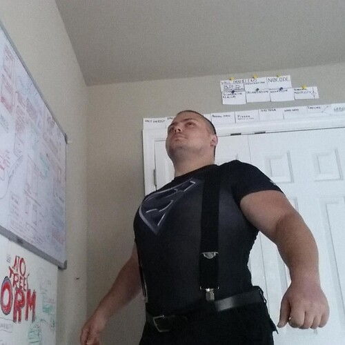

#214: Cosmopolis 1.0
Wednesday, September 30th 2020, 9:49:42 pm
It felt so healthy to sit down to the first version,
the promise of creating a program that will change the world felt amazing.
They settled on trusty bare bones express,
and the first routes they put in were view and edit.
Carl Sagan once said, that if you wish to make an apple pie from scratch,
you must first invent the universe.
Ward Cunningham the inventor of WikiWiki,
has absolutely solved the problem of starting in the beginning.
With just a few lines of code he opened the gateway to content creation,
in the most simplest way possible.
They already knew how to solve the problem of two users editing the same file at the same time,
the inspiration for that came from CouchDB.
In short, a unit of disk information in the first Cosmopolis was not a file,
it was a directory, with randomly named files prefixed with a version number.
For example, detroit/15-aabbd.txt, detroit/15-xyxx.txt
The brilliant thing about this is that when two people save version 15 at the same time,
the random name of the file decides which version 15 is used, via a simple alphanumeric sort.
If there are 32 people editing the same file, and they all click save at the same time,
and if some of the version 15 files arrive a second late because they have to travel across a slow network,
by relying on blindly picking the topmost entry after an alphanumeric sort, once they get all the data,
every participating server in the world will agree on the same version 15.
It should be noted that at this point the file will be flagged as having many conflicts,
and users will be called to take a look at the different version and manually pick and choose the good parts,
this time everyone will be careful to just wait until the latest version is compiled.
So, they had a collaborative editing platform in less than 100 lines of code,
basically a blank Wikipedia.
So now came the big question,
which part of the universe do we create first to get that apple pie going?
They briefly considered to name the city Uruk,
after the oldest city in the world, but settled on Night City instead.
And so it was, just like Wikipedia once had its first article,
cosmopolis now held the first city: http://localhost:3000/view/night_city
This was both exiting and terrifying, this program was meant to bring peace to the world.
and they only had a blank page for an imaginary city.
Adding user support had to come in next,
just like every city had a page, so did every user.
Thus, Night City would receive its first two citizens,
Alice and Bob.
Out in the server room the admin was already preparing for corruption simulations,
and she named the malicious politician Mallory.
Alice and Bob represented computer programs,
they were chatbots.
However, the bots are separate programs that use Cosmopolis like a user would,
they would log in, check messages, scan for phrases they recognize and then perform some task within Cosmopolis.
The bots were special,
they greatly simplified simulations and reasoning about this virtual test city.
As a whole they already created a very simple,
but living simulation.
For example one internal bot would be responsible for generating weather in Night City,
the bot actually got its information from Detroit's own weather service.
And our virtual Alice had a setting in her profile,
that would alert her when it was raining, she would then equip an umbrella before leaving for work.
Bots gave Cosmopolis that early life,
that made working on the system fun.
But by far the most special thing about bots,
was that they could be replaced by a real human,
by a person that would turn off the bot and log in into their account.
In the next release of the program,
the girls focused on enhancing this feature.
A bot could be instructed to ship groceries from Amazon,
but when a real person took over for an account,
they could go to a local store and buy and deliver the groceries for a small payment.
Even in the early tests, it was becoming more an more obvious,
that a powerful automated framework that could help people make money could be built.
As with every program the girls were worried about its adoption,
but it was universally agreed that people would join to make money,
and in the end large cities would go online within weeks,
because it helped people put food on the table by trading small services.
Cosmopolis 2.0 was what got the attention of United Nations,
but that is a story for another time.
Personal Note,
Becoming a programmer is not that hard, and when you have a dream like our story of Cosmopolis here,
it becomes a fun hobby that you just aimlessly poke at when there is some time in a day.
There is a tradition of creating Programming Cook-books, they are books tailored for a specific language,
that contain short recipes, and it is really fun to flip through it, and see what this programming thing is about.
I recommend learning JavaScript, which is currently called ES2020, to actually execute a program you will need an interpreter.
Your browser has one built in, as JavaScript is the language of the web, look up how to open the web console in your browser of choice.
The industry standard for server-side JavaScript applications like our Imaginary Cosmopolis is Node.js,
if interested you can search for video tutorials to help you get started.

References
- 1. express (expressjs.com)
- 2. Ward Cunningham (github.com)
- 3. Alice and Bob (en.wikipedia.org)
- 4. MUD (en.wikipedia.org)
- 5. line 26 (github.com)
- 6. Node.js (nodejs.org)
- 7. search for video tutorials (www.youtube.com)